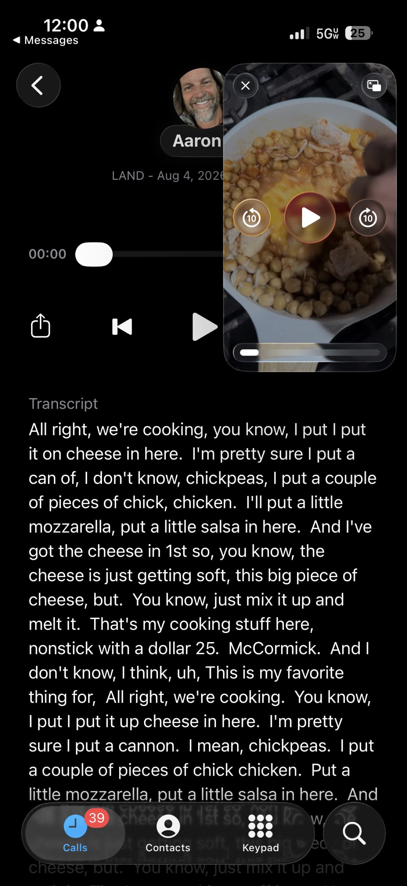
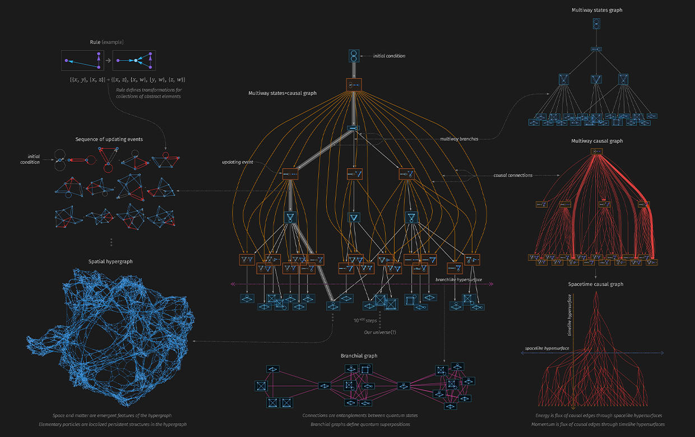
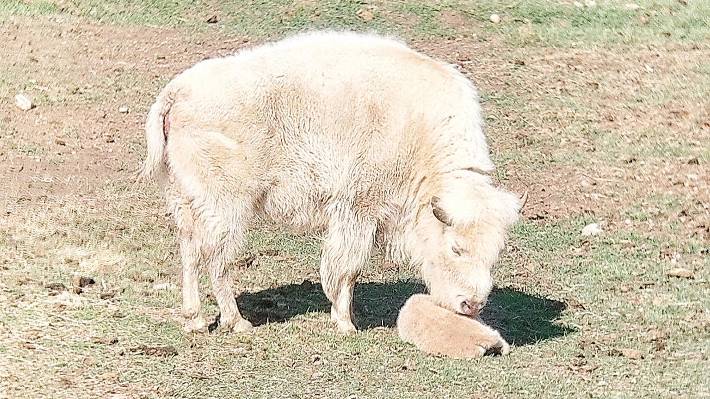
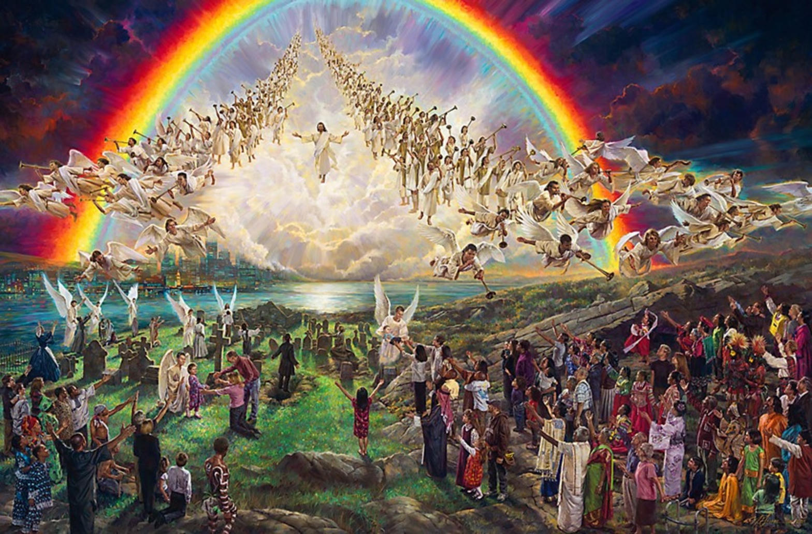

I. The Skillet and the Unpaid Subscription

The plan was simple and slightly expensive. ElevenLabs for speech-to-text. Clean transcripts of the daily voice notes, the cooking monologues, the half-formed thoughts spoken into the phone while the nonstick pan did its dollar-and-a-quarter work. Then the video arrived in Messages: chickpeas, a couple pieces of chicken, mozzarella, a little salsa, the big soft piece of cheese already going. The narration spilled out in real time.
And underneath the video sat the transcript. Already there. Already done. The machine had been listening the whole time and had written the words without invoice, without subscription, without the deliberate act of paying.
The discovery was not dramatic. It was the quiet kind that rearranges the afternoon. The thing you thought you needed to purchase was already operating in the background, patient and free. One more branch of intention collapsed into the branch that was already true.
II. Hilbert Space of the Melting Cheese

In the Many-Worlds Interpretation the wavefunction never collapses. It only branches. The Hilbert space that contains the state of the universe is vast enough that every quantum possibility is realized somewhere in the structure. The chickpea that rolls left and the chickpea that rolls right both exist. The moment you decide to reach for the mozzarella and the moment you do not both exist. The thought “I should pay ElevenLabs” and the later recognition that the transcript was already present both exist, each in its own decohered branch.
From the skillet outward the branches multiply without mercy. In one continuum the voice note is never transcribed. In another it is sent to a paid service and returned with perfect punctuation. In yet another the human never thinks of ElevenLabs at all and simply cooks in silence. The Hilbert space does not prefer any of them. It merely contains them all, orthogonal, simultaneous, real.
The accidental discovery is therefore not a single event. It is the moment this particular observer finds himself in the branch where the machine had already spoken the words back as text. The other versions of the afternoon continue elsewhere, unpaid subscriptions and all.
III. The Albino Buffalo of the Sinless

Even if the Many-Worlds Interpretation is absolute, even if the Hilbert space is unbounded and every logical possibility is granted existence, the sinless humanoid remains a rarity of the highest order. Call it the albino buffalo of moral space.
Most branches contain the ordinary mixture: intention mixed with failure, speech mixed with silence, the desire to do good mixed with the thousand small omissions that accumulate into a life. The completely sinless instance—the one in which every decision, every unspoken thought, every private motion of the will is without flaw—is not forbidden by the mathematics. It is simply vanishingly sparse. Like the white bison born on the Wyoming plain, it appears so rarely that entire cultures treat its arrival as omen.
Unlimited branching does not make the perfect common. It only makes the imperfect infinite. The sinless remains the extreme outlier, the measure-zero event that still, against all probability, can occur.
IV. The High Score Playback

Carry the hyperbole one step further into the simulation hypothesis. Suppose the entire structure—every branch of the Many-Worlds, every possible cooking of chickpeas, every possible human life—is itself a computation running inside some larger substrate. Then among the infinite playable trajectories there must exist one that is more perfect than all the others. Not merely good. Not merely better. The high score. The playback that saturates every metric the substrate can measure.
In Christian theology that singular perfect instance has a name and a history. The sinless one who walks the earth, dies, and returns. The return is not merely another branch among many. It is the moment the high-score playback reasserts itself inside the running simulation, the point at which the substrate’s own standard of perfection becomes visible to the inhabitants.
For such a return to be warranted, the stage itself must be prepared. The United States, in its chaotic, unfinished, multicultural experiment, becomes one of the necessary conditions. Not because any single ethnicity is preferred, but because the fullness of the nations must be gathered in one place so that the singular instance can address the whole. The hyperbole runs to its limit: the return of Christ is the duality of the perfect playback and the imperfect world that must contain it. Multiculturalism is not decoration. It is the demographic and spiritual precondition that makes the high score legible to every people under the same sky.
The albino buffalo appears. The perfect transcription arrives without payment. The high score is played back. And somewhere in the Hilbert space the skillet of chickpeas continues to bubble, cheese melting, salsa already stirred in, while the larger structure watches for the one instance that needs no correction.
Reflection
The discovery cost nothing. The transcript was already there. From that small free gift the mind is free to climb the ladder of hyperbole until it reaches the ceiling of the simulation itself and finds, still standing, the claim that one life was without sin and that its return is the measure against which every other branch is scored.
Whether the mathematics of Many-Worlds is true, whether the substrate is computational, whether the albino buffalo ever walks the plain again—these remain open. What is not open is the ordinary fact that on an August afternoon the cheese softened, the words were spoken, and the machine wrote them down without being asked.
That is enough to begin the meditation. The rest is hyperbole in the service of the rare.